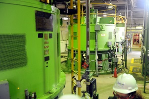

Bomba del circuito secundario

El agua que sale del condensador se ha de introducir en el circuito secundario del generador de vapor mediante potentes bombas que han de vencer la presión que hay en el mismo.